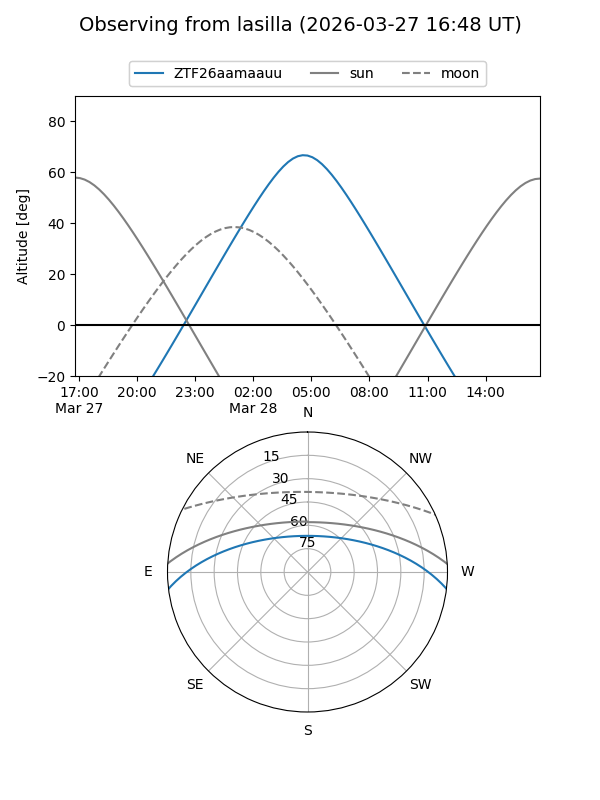
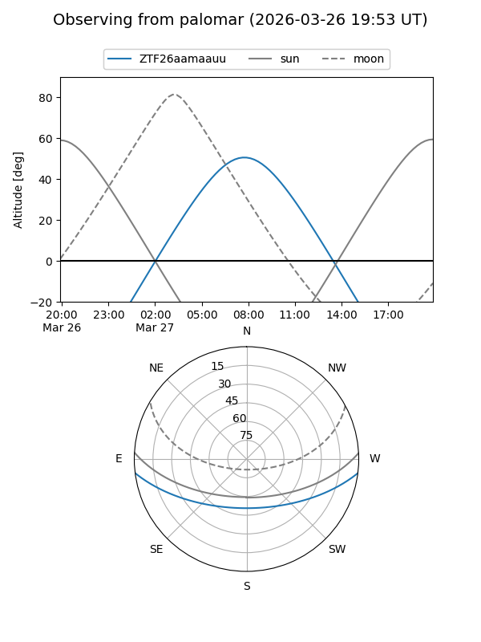

ZTF26aamaauu
Target ZTF26aamaauu at 2026-03-27 09:43
Aliases and brokers:
FINK: link
Lasair: link
ALeRCE: link
alt names
ZTF26aamaauu (ztf,fink_ztf)
Coordinates:
equatorial (ra, dec) = 183.7430,-5.86798
equatorial (HMS+DMS) = 12:14:58.31,-05:52:04.72
galactic (l, b) = (286.6280,+55.84514)
Flags:
Photometry:
last ztfg=17.66
1 ztfg detections
Lightcurve
Visibility


Additional plots